6. Surat Pengajuan
Cek Kesesuaian Data & Ajukan ke Polda (Samsat)
Deskripsi
Fitur ini memungkinkan petugas Samsat untuk memverifikasi kesesuaian data pengajuan dan meneruskannya ke Polda.
Prasyarat
- Login sebagai Samsat, terdapat pengajuan baru yang masuk
Langkah-Langkah
Langkah 1 — Login sebagai Samsat
Masuk ke sistem menggunakan akun Samsat.
Langkah 2 — Buka Detail Pengajuan
Akses halaman manajemen pengajuan, lalu detail pengajuan yang baru masuk.
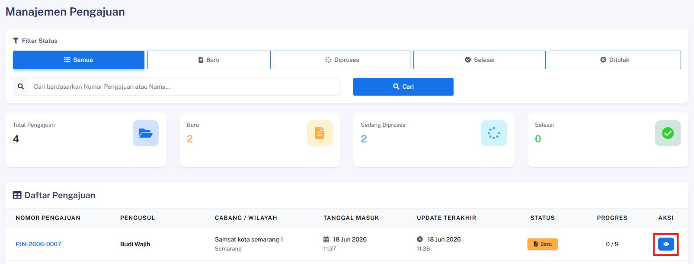
Langkah 3 — Periksa Kesesuaian Data
Tinjau seluruh data dan berkas yang dilampirkan oleh Wajib Pajak untuk memastikan kesesuaiannya.
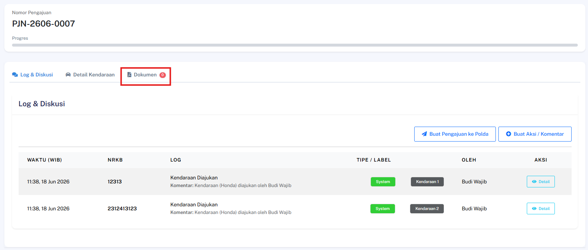
Langkah 4 — Ajukan ke Polda
Klik tombol Ajukan ke Polda untuk meneruskan pengajuan.
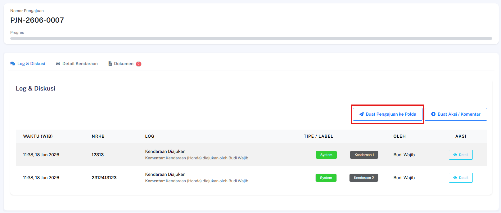
Hasil yang Diharapkan
- Pengajuan berhasil diteruskan ke Polda dan status pengajuan diperbarui sesuai.
Verifikasi & Setujui SP oleh Polda
Deskripsi
Fitur ini memungkinkan petugas Polda untuk mereview dan menyetujui Surat Pengajuan (SP) yang diteruskan dari Samsat.
Prasyarat
- Login sebagai Polda, SP ke Polda sudah masuk dengan status pending
Langkah-Langkah
Langkah 1 — Login sebagai Polda
Masuk ke sistem menggunakan akun Polda.
Langkah 2 — Buka Detail Pengajuan
Akses halaman detail pengajuan yang terkait dengan SP yang akan diverifikasi.
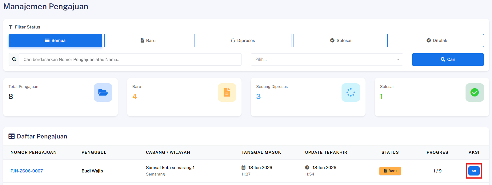
Langkah 3 — Review Dokumen SP
Tinjau seluruh dokumen Surat Pengajuan yang tersedia.
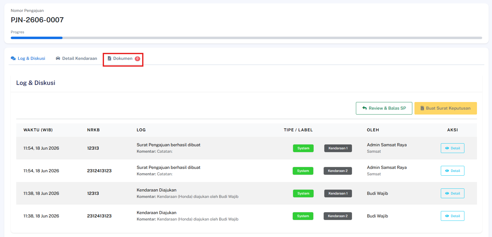
Langkah 4 — Setujui atau Tolak Dokumen
Klik tombol Review & Balas SP untuk memberikan persetujuan ataupun penolakan.
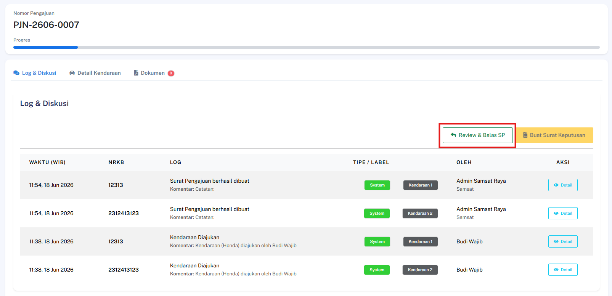
Hasil yang Diharapkan
- Surat Pengajuan berhasil disetujui dan status pengajuan diperbarui ke tahap berikutnya.
Polda Ajukan SP ke Bapenda & Jasa Raharja
Deskripsi
Fitur ini memungkinkan instansi Polda untuk mengajukan Surat Pengajuan (SP) yang telah disetujui kepada pihak Bapenda dan Jasa Raharja.
Prasyarat
- Pengguna telah login ke dalam sistem sebagai Polda
- Surat Pengajuan (SP) Polda sudah dalam status Approved
Langkah-Langkah
Langkah 1 — Akses Pengajuan Terkait
Pilih pengajuan yang telah disetujui (Approved) dan buka halaman detail.
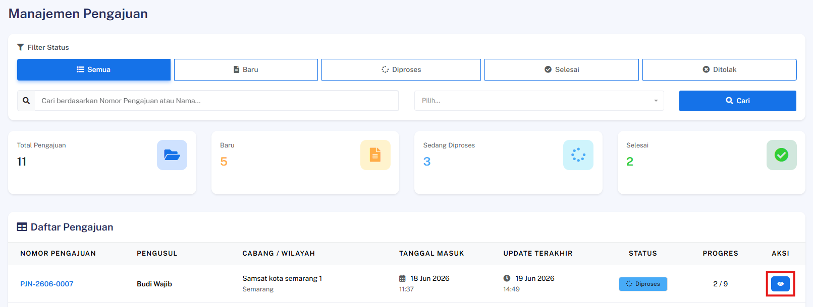
Langkah 2 — Inisiasi Pengajuan ke Bapenda & Jasa Raharja
Cari dan klik tombol Buat Pengajuan ke Bapenda/Jasa Raharja.
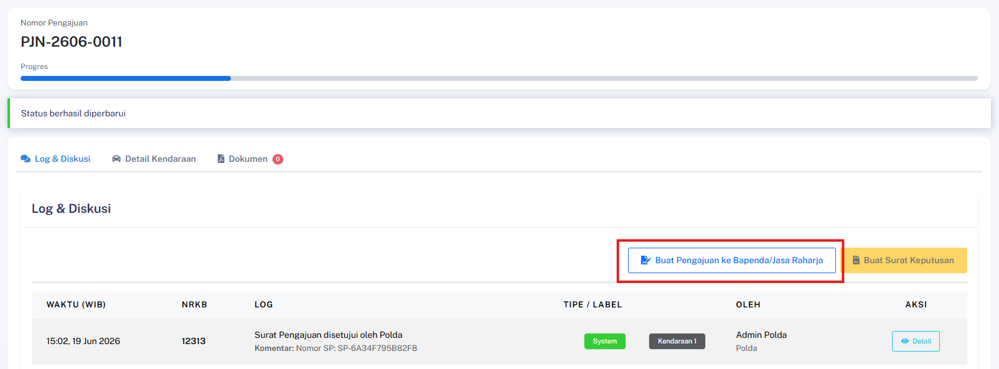
Langkah 3 — Isi Formulir Pengajuan
Lengkapi kolom dokumen yang diperlukan pada formulir:
| Kolom | Keterangan |
|---|---|
| Nomor Surat | Nomor surat resmi yang valid |
| Tempat | Lokasi Polda |
| Nama Direktur | Nama lengkap direktur dengan gelar dalam huruf kapital |
| Nama Pembuat Pernyataan | Nama petugas penerbit SP |
| Tanggal Dikeluarkan SP | Tanggal SP dibuat |
| Pangkat Direktur | Pangkat direktur dalam huruf kapital |
⚠️ Pastikan nomor surat yang dimasukkan sudah benar dan sesuai dengan dokumen fisik, karena nomor ini akan tercatat dalam log sistem secara permanen.
Setelah semua terisi, klik Lihat Preview.
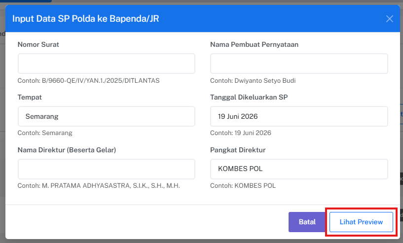
Langkah 4 — Simpan Draft
Cek preview surat dan jika sudah benar, klik Simpan sebagai Draft.
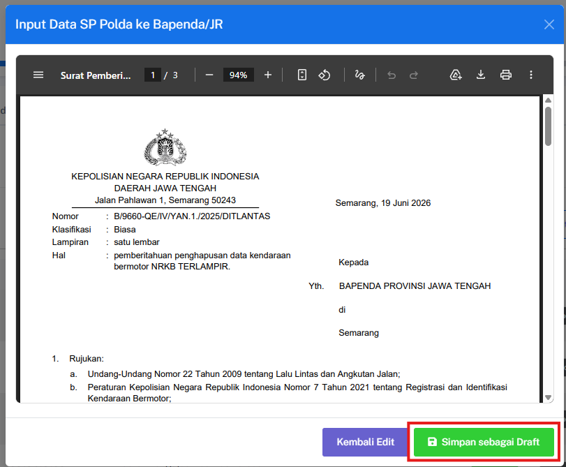
Langkah 5 — Terbitkan SP
Klik tombol Terbitkan SP untuk menerbitkan surat pengajuan.
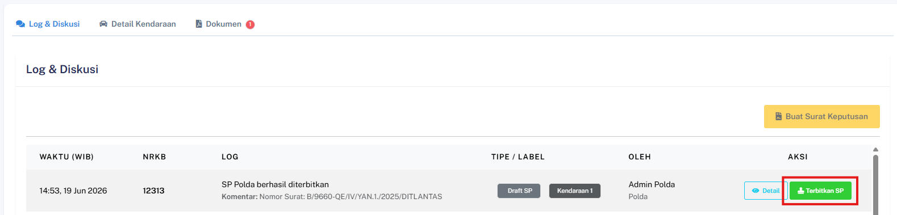
Hasil yang Diharapkan
- Surat Pengajuan (SP) ke Bapenda & Jasa Raharja berhasil dibuat oleh sistem.
- Log aktivitas pengiriman surat berhasil tercatat dalam riwayat sistem.
- Status progres pengajuan otomatis ter-update ke tahap berikutnya.
Persetujuan SP oleh Bapenda
Deskripsi
Fitur ini memungkinkan instansi Bapenda untuk meninjau dan menyetujui Surat Pengajuan (SP) yang dikirimkan oleh pihak Polda.
Prasyarat
- Pengguna telah login ke dalam sistem sebagai Bapenda
- Surat Pengajuan (SP) dari Polda sudah masuk ke dalam daftar verifikasi Bapenda
Langkah-Langkah
Langkah 1 — Akses Detail Pengajuan
Buka menu Surat Pengajuan, cari dokumen yang masuk dari Polda, lalu klik untuk membuka halaman detail pengajuan.
Langkah 2 — Setujui Dokumen
Tinjau seluruh informasi dokumen, kemudian cari dan klik tombol Review & Balas SP.
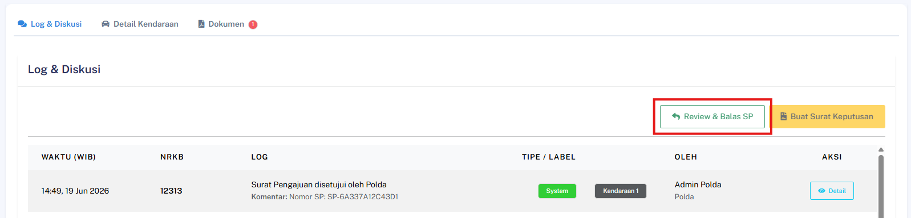
Langkah 3 — Isi Formulir Balasan SP
Lengkapi kolom dokumen yang diperlukan pada formulir:
| Kolom | Keterangan |
|---|---|
| Nomor Surat | Nomor surat resmi yang valid |
| Lampiran | Jumlah dan satuan lampiran yang disertakan |
| Sifat | Sifat surat balasan |
| Hal | Perihal kepentingan surat |
| Provinsi | Provinsi lokasi Bapenda |
| Jabatan | Jabatan pembuat surat balasan |
| Nama Penandatangan | Nama dan gelar pembuat surat dalam huruf kapital |
| NIP | Nomor Induk Pegawai pembuat surat |
⚠️ Pastikan nomor surat yang dimasukkan sudah benar dan sesuai dengan dokumen fisik, karena nomor ini akan tercatat dalam log sistem secara permanen.
Setelah semua terisi, klik Lihat Preview. Atau klik "Tolak" untuk menolak pengajuan.
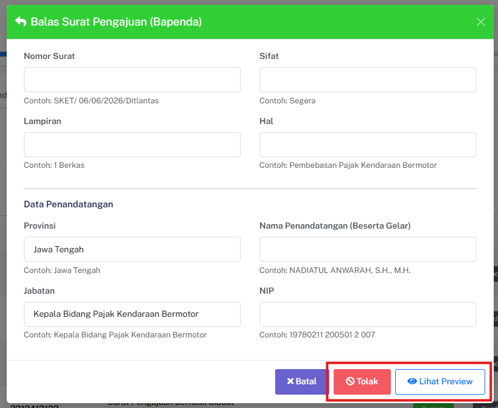
Langkah 4 — Simpan Draft
Cek preview surat dan jika sudah benar, klik Simpan sebagai Draft.
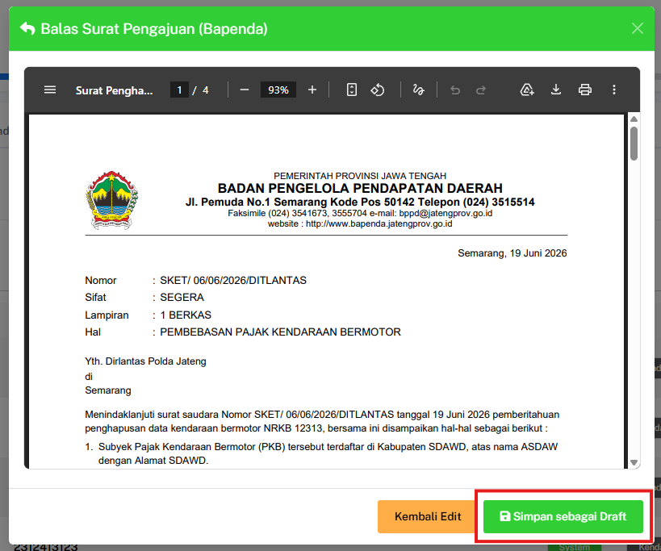
Langkah 5 — Terbitkan SP
Klik tombol Terbitkan SP untuk menerbitkan surat balasan pengajuan.
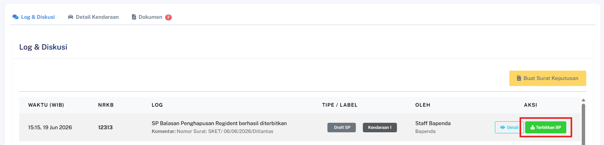
Hasil yang Diharapkan
- Status persetujuan dari pihak Bapenda berhasil berubah menjadi Approved.
- Riwayat persetujuan tercatat pada sistem dan progres dokumen diperbarui.
Persetujuan SP oleh Jasa Raharja
Deskripsi
Fitur ini memungkinkan pihak Jasa Raharja untuk meninjau dan menyetujui Surat Pengajuan (SP) yang dikirimkan oleh pihak Polda.
Prasyarat
- Pengguna telah login ke dalam sistem sebagai Jasa Raharja
- Surat Pengajuan (SP) dari Polda sudah masuk ke dalam daftar verifikasi Jasa Raharja
Langkah-Langkah
Langkah 1 — Akses Detail Pengajuan
Buka menu Surat Pengajuan, cari dokumen yang masuk dari Polda, lalu klik untuk membuka halaman detail pengajuan.
Langkah 2 — Setujui Dokumen
Tinjau seluruh informasi dokumen, kemudian cari dan klik tombol Review & Balas SP.
Langkah 3 — Isi Formulir Balasan SP
Lengkapi kolom dokumen yang diperlukan pada formulir:
| Kolom | Keterangan |
|---|---|
| Nomor Surat | Nomor surat resmi yang valid |
| Nomor Surat Bapenda | Nomor surat resmi yang valid dari Bapenda |
| Nomor Surat Regident | Nomor surat resmi yang valid dari Polda |
| Tempat Surat | Lokasi Jasa Raharja |
| Nama Penandatangan | Nama pembuat surat |
| Tanggal Surat | Tanggal pembuatan surat |
| Jabatan Penandatangan | Jabatan pembuat surat |
⚠️ Pastikan nomor surat yang dimasukkan sudah benar dan sesuai dengan dokumen fisik, karena nomor ini akan tercatat dalam log sistem secara permanen.
Setelah semua terisi, klik Lihat Preview. Atau klik "Tolak" untuk menolak pengajuan.
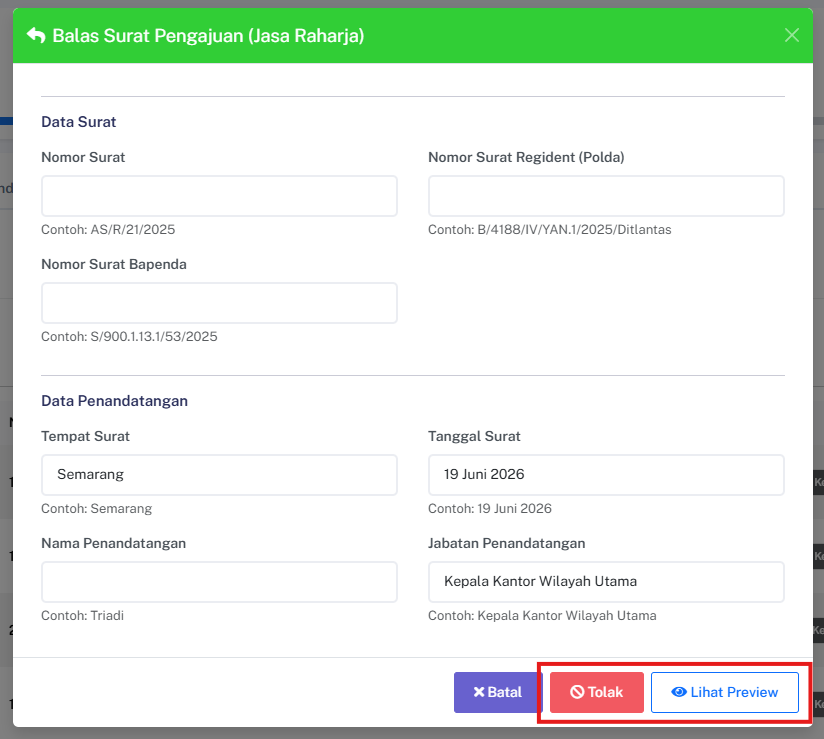
Langkah 4 — Simpan Draft
Cek preview surat dan jika sudah benar, klik Simpan sebagai Draft.
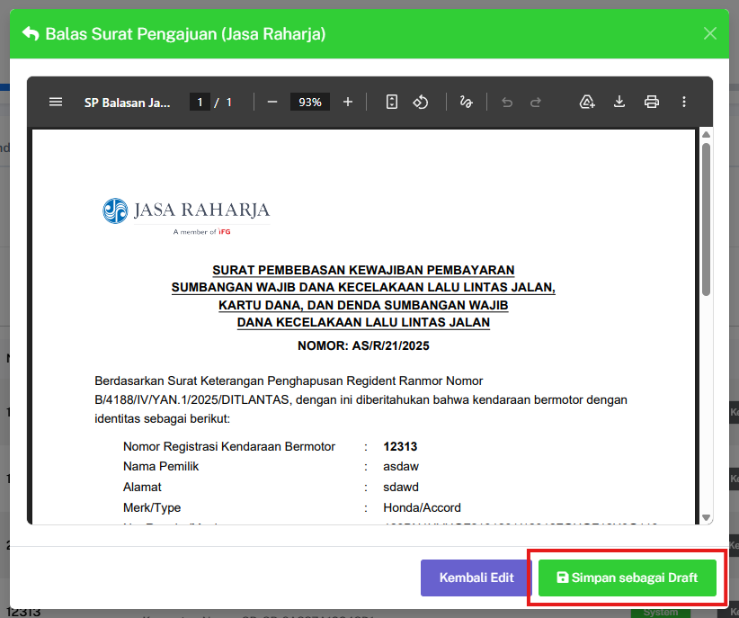
Langkah 5 — Terbitkan SP
Klik tombol Terbitkan SP untuk menerbitkan surat balasan pengajuan.
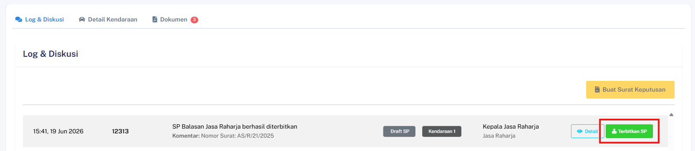
⚠️ Catatan Sistem: Jika instansi Bapenda juga telah menyetujui dokumen ini sebelumnya, sistem akan otomatis mengubah status global pengajuan menjadi Fully Approved dan memperbarui status kendaraan.
Hasil yang Diharapkan
- Status persetujuan dari pihak Jasa Raharja berhasil berubah menjadi Approved.
- Jika kedua instansi (Bapenda & Jasa Raharja) sudah memberikan persetujuan, status pengajuan otomatis berubah menjadi Fully Approved.
- Status kendaraan otomatis naik dan diperbarui menjadi 'Diproses'.
Preview PDF Surat Pengajuan
Deskripsi
Fitur ini memungkinkan pengguna untuk melihat pratinjau (preview) dokumen PDF dari Surat Pengajuan langsung di dalam aplikasi sebelum mengunduhnya.
Prasyarat
- Pengguna telah login ke dalam sistem
- Dokumen Surat Pengajuan (SP) sudah tersedia atau sudah dibuat pada sistem
Langkah-Langkah
Langkah 1 — Akses Detail Pengajuan
Buka menu Surat Pengajuan dan pilih salah satu dokumen yang tersedia untuk masuk ke halaman detail pengajuan.
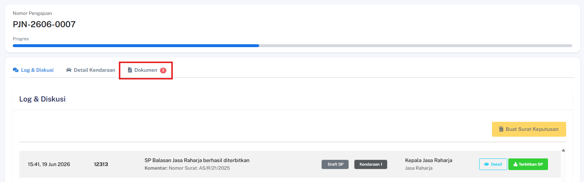
Langkah 2 — Buka Pratinjau PDF
Cari dan klik ikon atau tautan Preview PDF SP yang terletak pada halaman detail dokumen.
Hasil yang Diharapkan
- File PDF Surat Pengajuan berhasil di-render dengan benar tanpa merusak tata letak.
- Dokumen PDF berhasil ditampilkan secara langsung di dalam browser atau komponen iframe aplikasi.